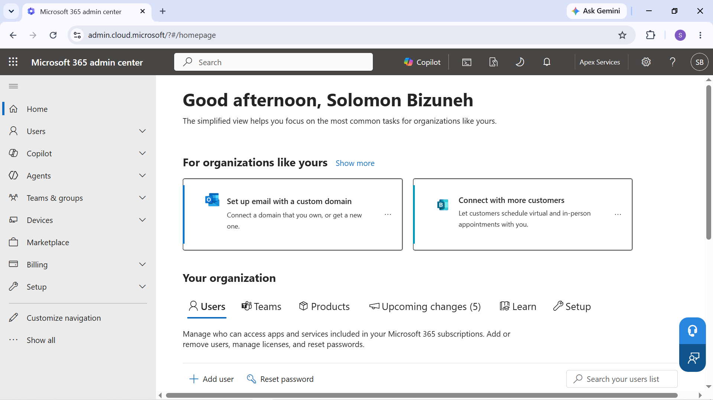

Microsoft 365 IT Support Lab
Built a practical Microsoft 365 environment covering user and group management, identity and access, collaboration services, and common IT-support scenarios. Practiced administration and troubleshooting across Microsoft 365 services.